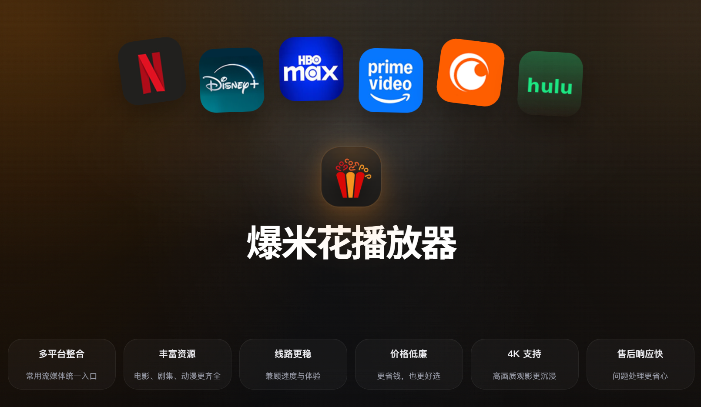
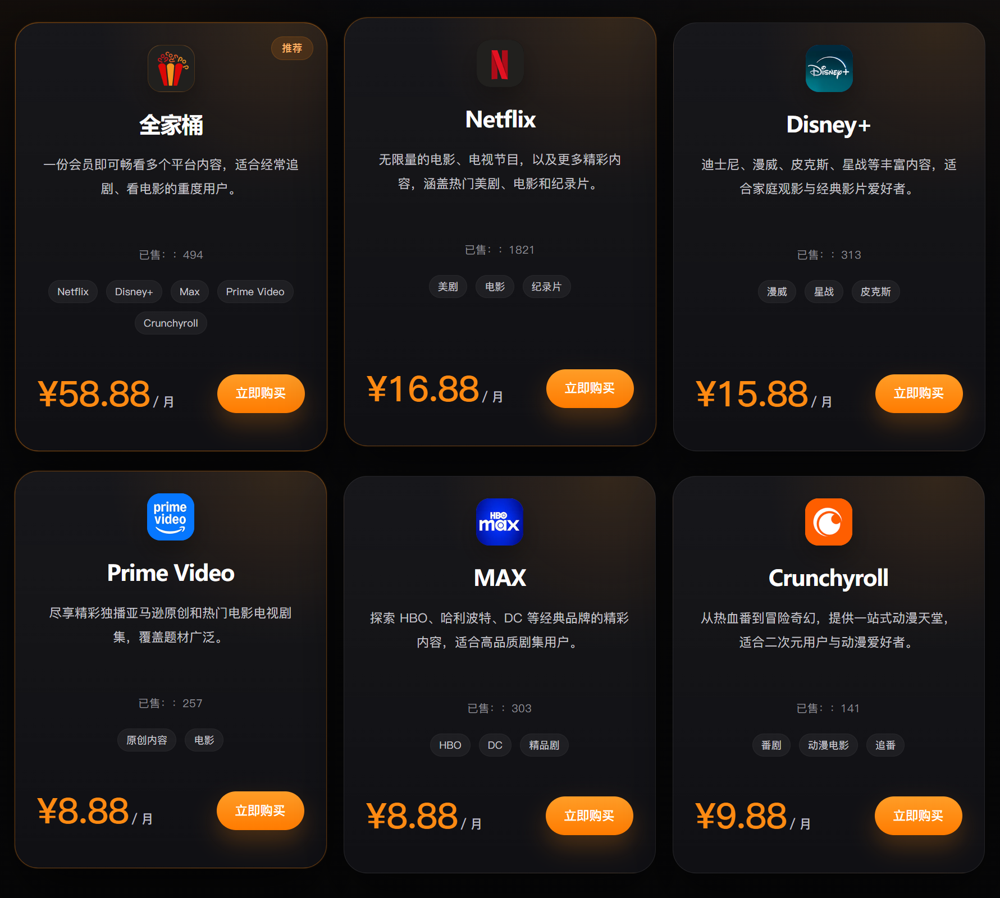
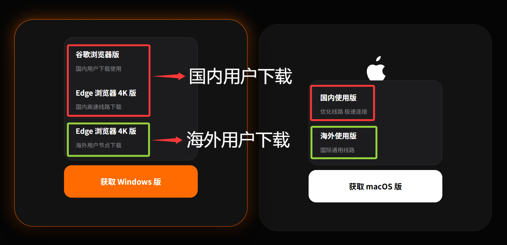
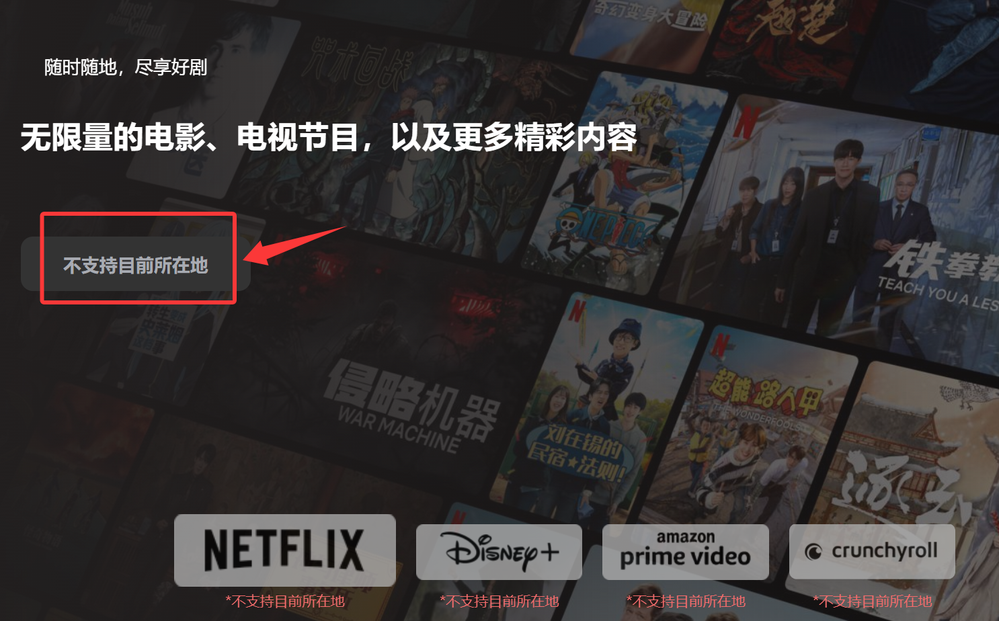

🕓2026年6月16日
视频教程：▶️https://youtu.be/DQnoysQw2-E?si=gVM042PS9peuMSNV
很多粉丝朋友在看 Netflix、Disney+、HBO Max 等流媒体时，经常遇到平台太多、来回切号登录非常麻烦的问题，而且多平台订阅成本也很高。今天这篇教程就教大家如何用**优质的高速机场线路**，搭配一站式管理神器——**爆米花播放器**，实现极速 4K 丝滑观影。
一、线路选择
想要丝滑观看 4K 流媒体，稳定的解锁线路是第一步。
一个优质的机场应该具备以下特点:
目前市面上优质的流媒体机场通常提供 5-20 条精选线路，不仅完美支持 Netflix，还能解锁 HBO、Hulu、动画疯等热门流媒体平台。这些机场的流量资费通常在 ¥20/月 = 100GB 左右，性价比极高，特别适合追剧党和影视发烧友。
以下为您精选了几家口碑出众、服务稳定的 Netflix 专业机场：
| 机 场 | 价 格 | 是否解锁奈飞等 | 线路及优惠 |
| Wget Cloud | 月付：59元/140GB 年付：588元 |
全解锁 | 8K高端专线老机场 |
| Nice Cloud | 月付：22.99元/200GB 不限时套餐：85元/200GB |
全解锁 | IEPL+中转线路 88折优惠券：NICEXL88Z |
| 快雷 | 月付：20元/150GB 不限时：139元/300GB |
全解锁 | IEPL家宽线路 5折优惠券：xiaolu555 |
| 极速云 | 月付：15.99/1200GB 不限时：88元/1000GB |
全解锁 | 中转+IEPL 高速节点 89折优惠码： KJXL88 |
| 糖果云 | 月付：28元/100GB 季付：78元 |
全解锁 | IEPL专线机场 6折优惠码：Candytally |
| 小地球仪VPN | 月付：23.8元/120GB 不限时：15元/60GB |
全解锁 | 高速稳定 【邀请码：625940】 免费用：3天30GB |
| 👉 👉 👉 精选机场TOP排行榜：https://github.com/KEJIXIAOLU/jcpm | |||
二、爆米花播放器有什么优势？
爆米花播放器支持一键整合多平台，轻度用户再也不用花多份冤枉钱。
第一，价格直接打下来，对比官方原价一年能省上千块，日均几块钱轻松追剧；
第二，彻底告别封号焦虑，不用拼陌生人账号，稳定登录不触发风控，4K高清全程流畅；
第三，全分区内容随心看，无广告、多设备通用，顶配会员权益全部拥有，不用额外加价升级套餐。

三、会员套餐
官方授权购买/注册渠道：>>点击这里前往爆米花购买平台
粉丝专享 88折 优惠码：xiaolu
套餐建议：如果是全都要的轻度用户，直接选合租全功能套餐，性价比最高。

四、客户端下载与极速配置（保姆级教学）
官方客户端下载： 国内用户下载国内版，海外用户下载海外版。

五、保姆级配置步骤：
1. 下载并安装好爆米花播放器。
2. 登录你在爆米花注册好的账号。
3. 开启你的机场代理节点，点击首页你想看的平台（如 Netflix），播放器会自动帮你一键免切号登录，直接开启 4K 极速追剧。
六、FAQ 常见问题与解决方案
1、为什么显示不支持目前所在地？
当前支持地区：中国香港、中国台湾、新加坡、美国，换成支持的地区节点就可以了。

2、为什么我看不了Netflix、Disney+、HBO Max 等流媒体?
3、是否支持 4K 观影？
部分平台及对应线路支持高画质播放。实际播放清晰度会受到套餐版本、片源规格、网络环境、播放设备及平台规则等因素影响，请以实际播放效果为准。
有任何问题，可以联系工作人员或小露。欢迎入群一起学习交流：小露电报技术交流群
祝大家观影愉快！